Порядок слов в английском очень важен, но описать его не сложно, для этого достаточно нескольких простых правил. Каких? Разберемся по порядку!
В отличие от русского языка, в английском языке у слов нет окончаний, которые могли бы помочь понять роль каждого члена предложения . Сравните:
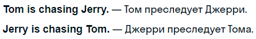Мы поменяли местами всего два слова, но совершенно изменили смысл предложения . Кроме того, определенный порядок слов дает собеседнику понять, о каком типе предложения идет речь: утвердительном, отрицательном, вопросительном, повелительном или восклицательном.
Чтобы разобраться, вспомним, какие бывают члены предложения.
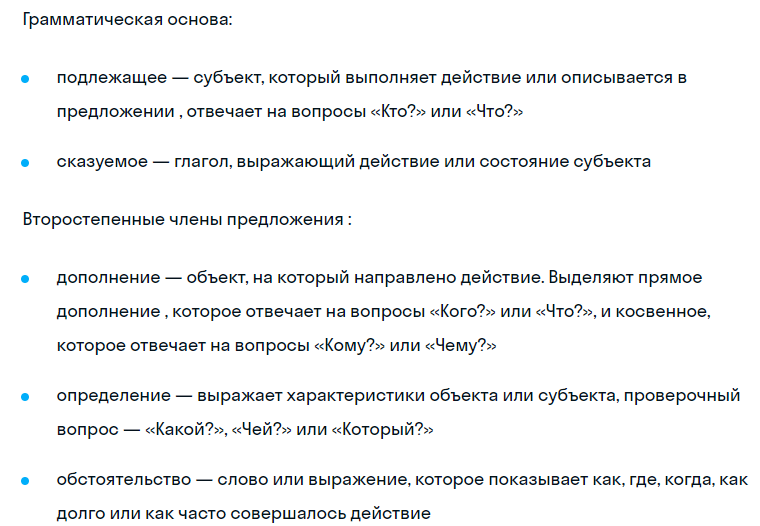В грамматике принято выделять два типа порядка слов: прямой (Direct Order) , который используют в повествовательных (утвердительных и отрицательных) предложениях, и непрямой (Indirect Order) , который помогает задать вопрос, выразить восклицание или даже отдать распоряжение.
Прямой порядок
Главная особенность прямого порядка слов в утверждениях и отрицаниях — это то, что сказуемое идет строго после подлежащего. Разберем 5 основных правил для каждого из членов предложения :
1. Подлежащее на первом месте
В утвердительных предложениях подлежащее обычно стоит перед сказуемым и может быть выражено существительным (с артиклем или без), местоимением, инфинитивом, герундием или оборотом из нескольких слов:
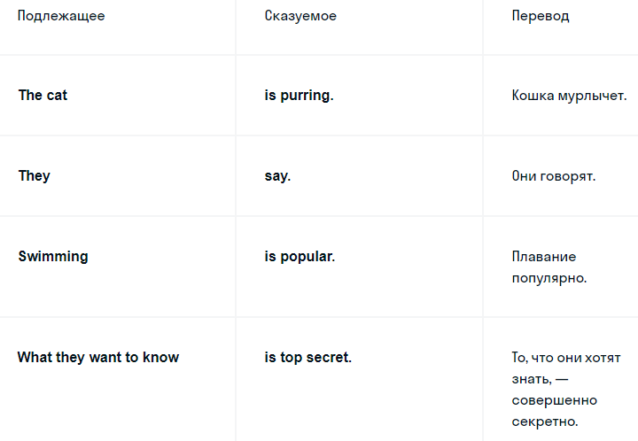2. Сказуемое на втором месте
Сказуемое может быть выражено одним смысловым глаголом или несколькими (вспоминаем про вспомогательный глагол , после которого идет основной). С глаголами, вроде to be (быть) или to become (становиться), в состав сказуемого могут входить и другие части речи — прилагательное, причастие или существительное. Частица not в отрицательных предложениях тоже входит в состав сказуемого.
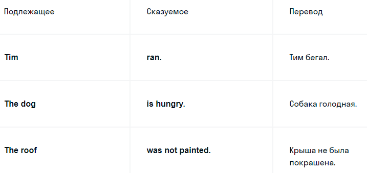В пассивных конструкциях, как в предложении «The roof was not painted» , подлежащим является объект, на который направлено действие, и сохраняется прямой порядок слов.
3. Дополнение — после сказуемого
Дополнение , если оно есть в предложении , как правило, выражено другим существительным (именем собственным или нарицательным) и употребляется после сказуемого.
Если в предложении два дополнения — и прямое, и косвенное, тогда каждое борется за первенство по следующему правилу:
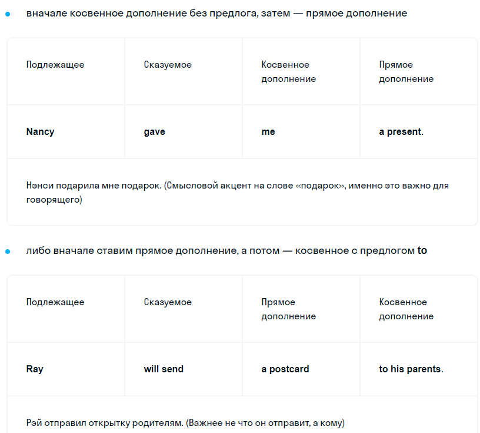4. Обстоятельство ставим по ситуации
В зависимости от контекста и вида обстоятельства они могут располагаться в конце, начале и в середине предложения.
• В конце предложения
Обстоятельства образа действия, места и времени чаще всего занимают место в конце предложения после сказуемого или после дополнения, если оно есть.
Обстоятельства неопределенной частоты (например, sometimes — иногда, often — часто) также иногда используют в конце предложения, чтобы обратить на них внимание собеседника.
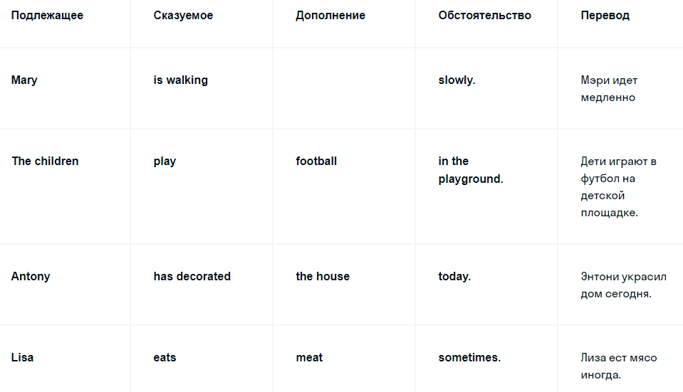Если необходимо поставить несколько обстоятельств подряд, они должны идти в таком порядке:
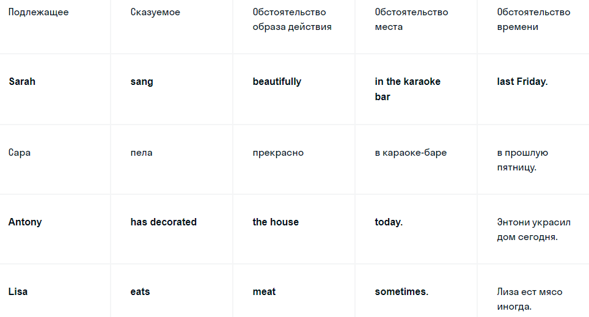• В начале предложения
Соединительные наречия (then — тогда, next — затем), наречия выражения мнения (surprisingly — неожиданно, unfortunately — к сожалению), наречия степени уверенности (maybe, perhaps — может быть) используют в начале предложения. Обстоятельства времени, места, неопределенной частоты также иногда употребляют в начале предложения, чтобы выделить их в речи.
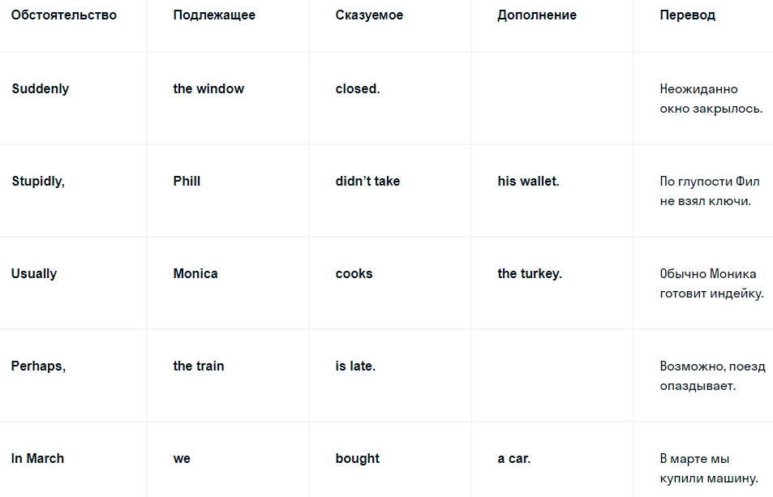• В середине грамматической основы
Некоторые обстоятельства употребляют после подлежащего, после вспомогательных глаголов и после форм глагола to be (быть). Если вспомогательный глагол выражен двумя словами, например have been, то обстоятельство ставят между ними.
Как правило, здесь идет речь об обстоятельствах, которые указывают на законченность действия (almost — почти), на неопределенную частоту действия (always — всегда), на степень уверенности говорящего (probably — наверное). Кроме того, в середине предложения могут использовать наречия образа действия, фокусирующие (even — даже) и выражающие мнение (fortunately — к счастью) наречия.
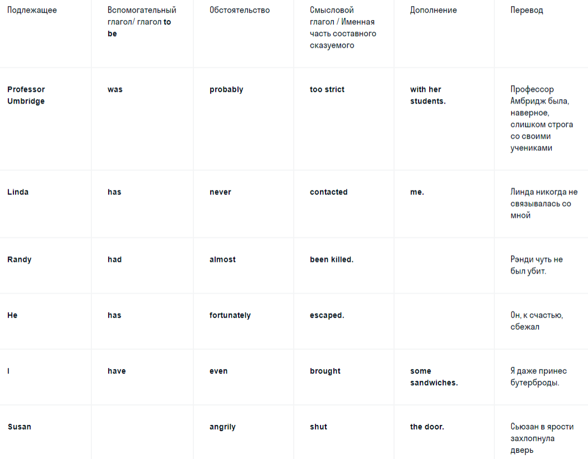В отрицательных предложениях обстоятельства обычно ставят после частицы not, но если хотят подчеркнуть отрицание, то — перед вспомогательным глаголом. Также наречие всегда ставят перед сокращенной формой глагола.
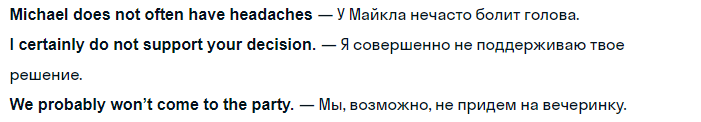Существуют наречия, например really (на самом деле), only (только), которые могут свободно менять свое место в предложении, создавая различные смысловые ударения или меняя смысл. Например:
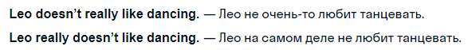5. Определение ставим до или после существительного
Определение употребляется до или после существительного, от которого оно зависит.
• Определения, выраженные прилагательными, причастиями, притяжательными местоимениями и порядковыми числительными, идут перед существительным.
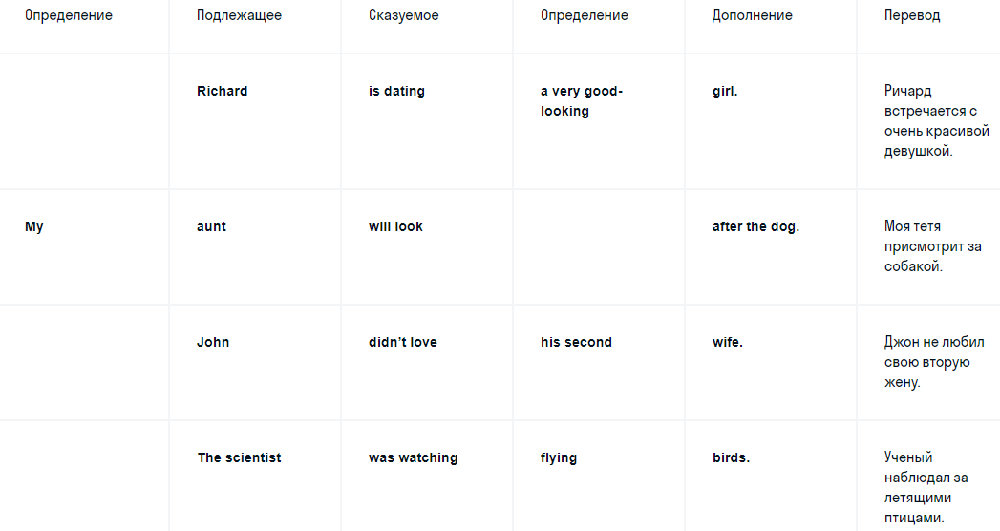Если нужно описать какой-либо объект несколькими прилагательными, следует делать это в таком порядке:

• Определение используют после существительного, если оно выражено причастным оборотом или другой конструкцией из нескольких слов, а также в случае с некоторыми прилагательными.
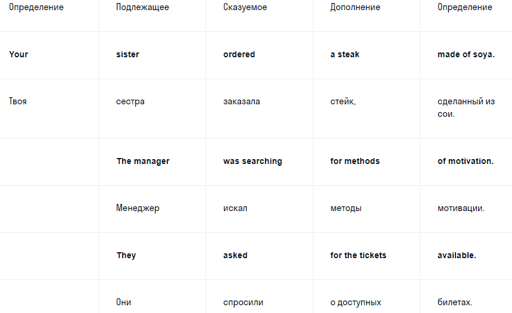Придаточные предложения
В придаточных предложениях сохраняется прямой порядок слов, даже если он нарушен в главном предложении.
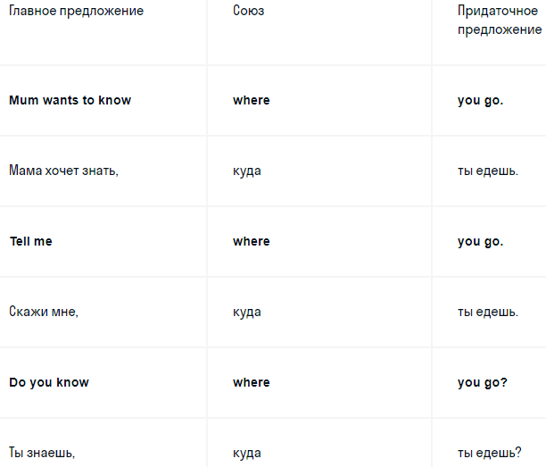Таким образом, базовая схема прямого порядка слов выглядит так:
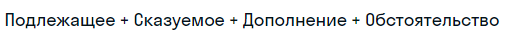Непрямой порядок
Когда нарушается последовательность «подлежащее-сказуемое», говорят о непрямом порядке слов.
Вопросы
В разговорной речи можно задать вопрос с прямым порядком слов, поменяв только интонацию, как мы делаем это на русском, но в английской грамматике на этот счет есть свои правила. Для каждого вида вопросов характерен свой особый порядок слов, и в большинстве случаев вспомогательный глагол (или его часть), глагол to be или модальный глагол ставятся перед подлежащим.
Посмотрите примеры общих, специальных и альтернативных вопросов:
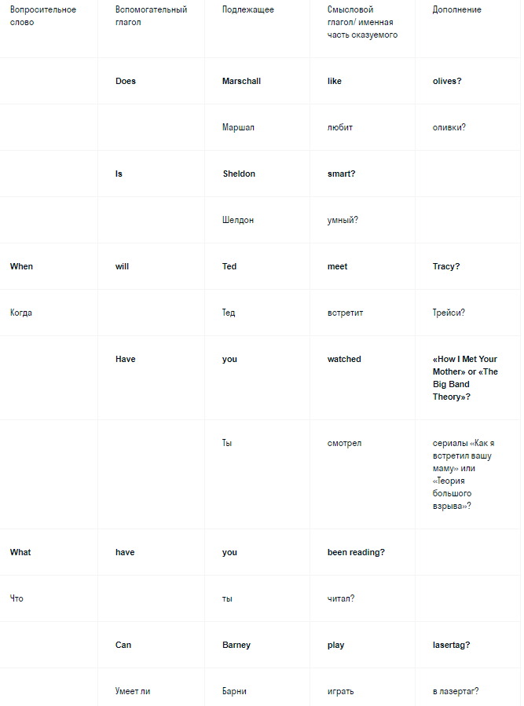Частицу not в отрицательных вопросах («Разве?») употребляют вместе со вспомогательным глаголом:
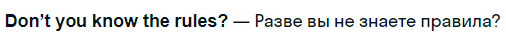Обратите внимание, что вопросительное слово в специальных вопросах ставится в начале предложения и заменяет неизвестное дополнение, определение или обстоятельство. При этом если в вопросе к дополнению нужен предлог, в вопросе его ставят в конце:
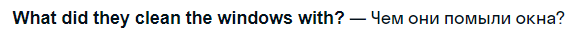В вопросе к подлежащему слова what или who логичным образом его заменяют:
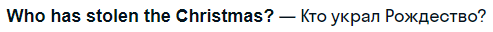Разделительный вопрос обычно используют, когда хотят получить подтверждение сказанного. Он состоит из утвердительного или отрицательного главного предложения и короткого вопроса в конце. В вопросительной части также меняют местами подлежащее и сказуемое:
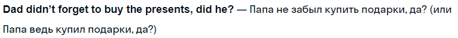Повелительные высказывания
В приказах или просьбах обычно нет подлежащего. В остальном сохраняется типичный порядок слов: сказуемое, затем дополнение, остальные члены предложения располагаются в зависимости от ситуации. Если говорящий хочет подчеркнуть, к кому он обращается, он может сделать это до или после глагола:
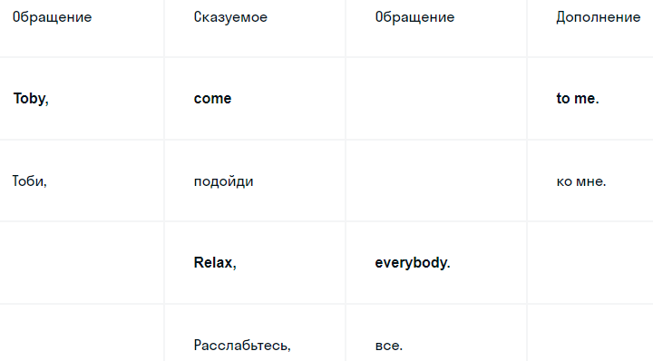Местоимение you перед формой повелительного наклонения делает фразу более эмоциональной:
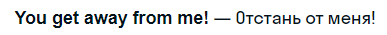В отрицательных повелительных высказываниях обращение должно идти после частицы not. Это помогает отличить просьбу или приказ от обычного отрицания:
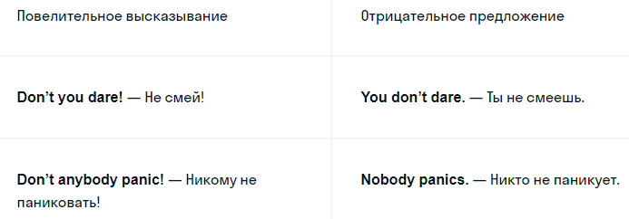Восклицания
Чтобы выразить восторг, радость, грусть, обиду и другие эмоции, в английском часто используют конструкции со словами how (как), what (что, какой), may (пусть) и отрицательные вопросы, о которых мы говорили ранее
• Восклицания с how
Обычно за этим словом следует определение, подлежащее, сказуемое, дополнение и обстоятельство, но отдельные члены предложения могут отсутствовать.
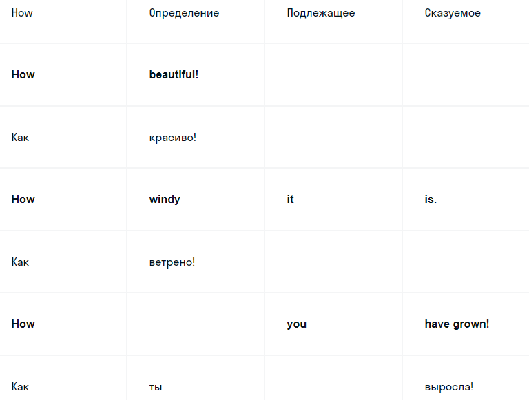• Восклицания с what
После what обычно идет прилагательное или существительное (определение, подлежащее или дополнение) затем сохраняется прямой порядок слов.
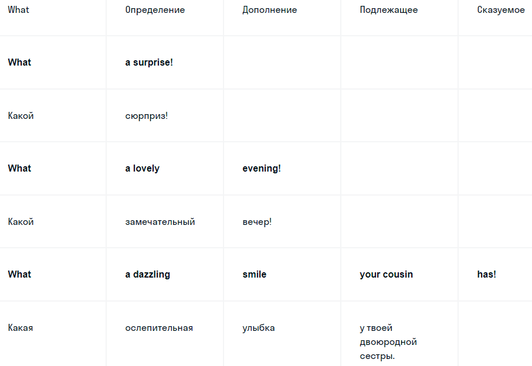• Высказывания с may
Модальный глагол may в восклицаниях иногда ставят в начале предложения перед подлежащим, чтобы придать высказыванию определенный стиль или эмоцию.
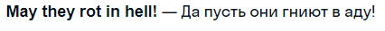Кстати, знаменитая фраза из «Звездных войн» тоже построена на этом приеме:
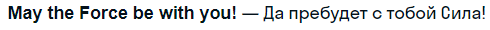• Отрицательные вопросы
Некоторые носители языка могут использовать отрицательные вопросы в форме восклицаний, например:
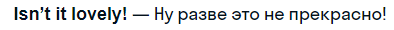Инверсия
Иногда прямой порядок слов в утверждениях и отрицаниях нарушается специально, чтобы достичь какого-то особого стилистического эффекта. Вспомните, как говорил магистр Йода из «Звездных войн»:
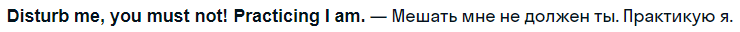В реальной жизни, как правило, инверсию используют в деловой или литературной речи. Вот еще несколько примеров:
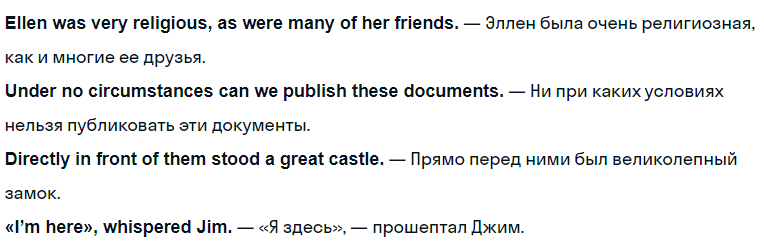Яркий пример из разговорной речи: чтобы сказать «я тоже», используют устойчивые выражения со словами so (в утверждениях) и neither (в отрицаниях):
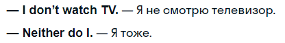Кроме того, в неформальной беседе инверсию часто используют со словами here and there в значении «вот»:
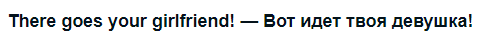Неполные предложения
Наряду с инверсией, некоторые члены предложения могут просто отсутствовать. Носители языка в разговоре могут пропускать какие-то слова или фразы, если они и так понятны из контекста, либо чтобы разделить очень длинное предложение. Вот несколько примеров:
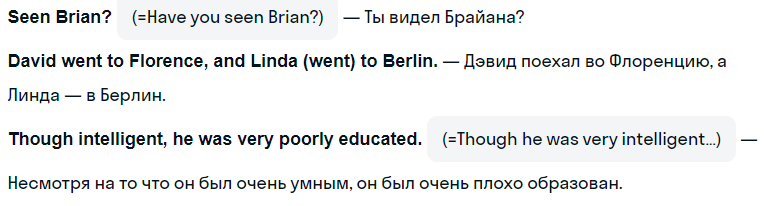